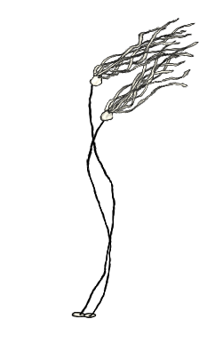

First edition
75¢
IRONICMTN
EXERCISE
Karta
 Library for vector and raster geographical data processing. It's sort of
like a lightweight programmable GIS in Python with relatively few
dependencies (numpy, pyproj, optional GDAL bindings).
Library for vector and raster geographical data processing. It's sort of
like a lightweight programmable GIS in Python with relatively few
dependencies (numpy, pyproj, optional GDAL bindings).
Narwhal

Toolkit for oceanography. Narwhal is an experimental Python package for
analysing CTD and XBT data. It provides a storage format based on JSON
and methods for performing common calculations such as geostrophic
velocity, mixing fractions, empirical orthogonal functions (EOFs), and
baroclinic mode analysis. It also provides a ctypes wrapper to
the Gibbs Seawater (GSW) library.
irlib
Software for analyzing glacier-penetrating radar data, particularly that
collected using Blue System's ice-penetrating radar hardware.
irlib can be used to read data, perform pre-processing and
post-processing steps, and pick reflection events.
ENTERTAINMENT
Linear gravity wave simulator
Visualizes linear gravity waves propogating through the medium of an
HTML5 canvas!
Is it Quaking in Vancouver?
Better check often.